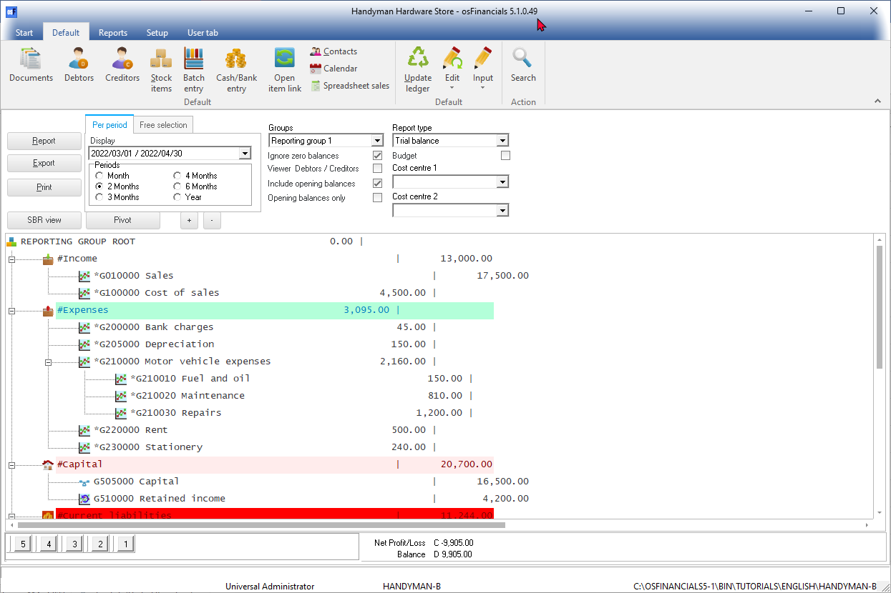

osFinancials5 Program
The osFinancials5 program is easy to use with a user-friendly graphical interface. When launching osFinancials for the first time, the osFinancials5 program will be displayed in the language linked to a Set of Books, when a Set of Books is opened in osFinancials5 is launched for the first time.
For the purposes of this documentation, the images (screenshots) are displayed in the default English language.
|
|
By default, osFinancials5 will be displayed in the "Classic" theme. You may select another theme (i.e. "Blue, Glass, Material, Silver, Soft-blue" or "VS2010") on Theme (Setup ribbon) to change the appearance of osFinancials5. The Material theme (black icons) is used for screen captures in the rest of this documentation. The Blue, Glass, Silver, Soft-blue theme includes a similar set of icons as in the Material theme (navy-blue icons). The "Classic" theme (default theme) and "VS2010" theme displays the same set of icons (located in the "...\bin\themes\Classic" folder. |

Most of the program options can be easily accessed by one or more mouse-clicks or by pressing a few buttons on the keyboard.
osFinancials5 offers many features and options. To enhance your effectiveness and efficiency to perform your tasks in the program, it is important that you can access the required options as quickly and effortlessly as possible. The osFinancials5 program screen will be briefly discussed:

The design of the osFinancials5 user-interface (UI) offers you different options, which displays information and/or allows you to access the different features and options:
- Title bar – Displays the Company name of the opened (active) Set of Books and the name and the version of osFinancials program.
- Ribbon bar - Displays the ribbon tabs (i.e. Start, Default, Reports, Setup and User tab).
|
|
You may press the F1 key on most screens, fields and tabs to launch the associated (context-sensitive help) topic. |

- Ribbons – The functions and features and utilities are grouped in five (5) Ribbon tabs. These are:
- Start - Open, Register (will be displayed until your osFinancials5 is registered), Backup / Restore, Delete Set of Books, Create Set of Books, Save as (Set of Books), Close Set of Books, Switch language and Help (menu list).
- Default – Documents, Debtors, Creditors, Stock items, Batch entry, Reconciliation, Open item link, Contacts, Calendar, Update ledger, Edit (menu list), Input (menu list), Search.
- Reports – Reports (menu list), User reports (menu list), Spreadsheet reports (menu list), Ledger analyser 1, Ledger analyser 2, T-Account viewer, Printer.
- Setup – Company info, Documents, Groups, Stock information, Reporting dates, Access control, Batch types, Salesperson, Printer, Workflow setup, Setup (menu list), Report designer, Import, Export and Tools (menu list).
- User tab – This tab is by default not activated. The user tab is a quick menu to manage (customise) the menus, most frequently used. It can be grouped into up to six (6) groups. If users are added in Setup → Access control, it will store the custom menus for each user. There are two (2) options to activate this tab, i.e.:
- Auto learn – Tick this option to add the last accessed options to the User tab.
- Edit – Add / Remove the options to be displayed in the User tab.
|
|
Show / Hide Ribbon options You may also hide or show the ribbon options using the Collapse and Pin icons on the bottom of the right-hand corner of the ribbon options strip:
|


- Status bar – The following is displayed in the Statusbar:
- User Name – Universal Administrator will be displayed when a Set of Books with no users and passwords. If users and passwords were set in Setup → Access control, it will display User and the user's name.
- Name of Books - The Name of the opened (active) Set of Books is displayed in the fourth section.
- Path of the Set of Books - The full path of the opened Set of Books is displayed in the last section.
|
|
Most of these program options are only accessible if a valid Set of Books are opened. If no Set of Books are opened, only the Start ribbon tab will be displayed. The Default, Reports, Setup and User tab ribbons will be inactive. On the Start ribbon, the Open, Backup / Restore, Delete Set of Books, Create Set of Books, Switch language and Exit osFinancials5 options will be accessible. You need to have a Set of Books opened to access the Register and Save as options. |